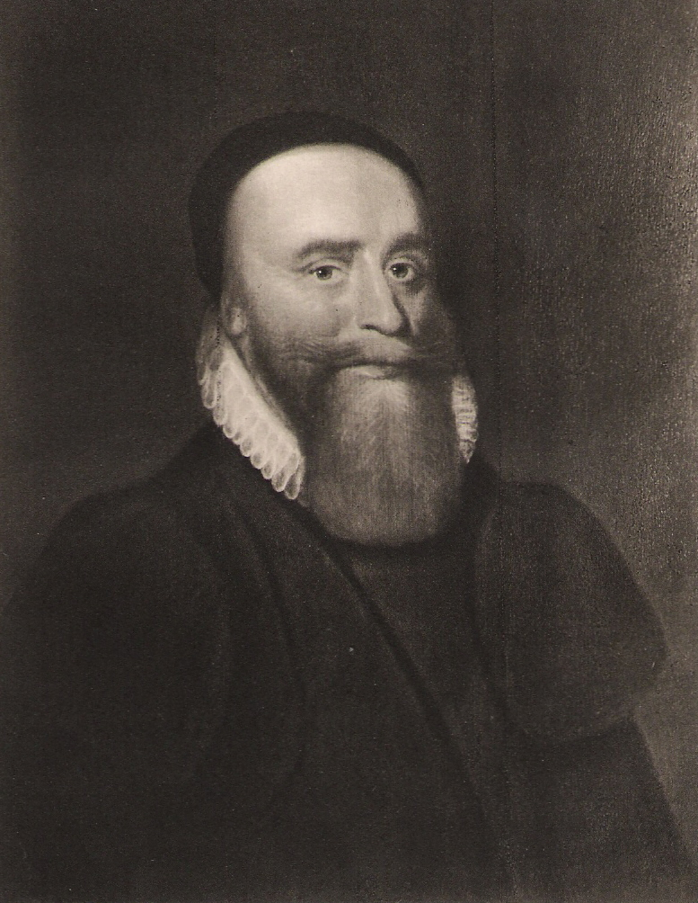

Title
There have been two baronetcies created for persons with the surname Burnett, one in the Baronetage of Nova Scotia and one in the Baronetage of the United Kingdom. As of 2010 one creation is extant while one is dormant. The Burnett Baronetcy, of Leys in the County of Kincardine, was created in the Baronetage of Nova Scotia on 21 April 1626 for the leading Covenanter Thomas Burnett. He was the uncle of Gilbert Burnet, Bishop of Salisbury. The third Baronet was one of the Scottish representatives to the 1st Parliament of Great Britain. The eighth, tenth and twelfth Baronets all served as Lord Lieutenant of Kincardineshire. The thirteenth Baronet was a Major-General in the British Army. The title became dormant on the death of the fourteenth Baronet in 1959. The sixth Baronet married Catherine, sister and heiress of Sir Alexander Ramsay-Irvine, 6th and last Baronet, of Balmain (see Ramsay Baronets). Their second son Alexander Burnett succeeded to the Ramsay estates on his uncle's death in 1806 and assumed the surname of Ramsay in lieu of his patronymic. The same year the baronetcy of Balmain was revived in his favour. His descendant Sir Alexander William Burnett Ramsay, 7th Baronet, is presumed to be the heir to the Burnett Baronetcy of Leys. The Burnett Baronetcy, of Selborne House in the County Borough of Croydon,[1] was created in the Baronetage of the United Kingdom on 17 October 1913 for Sir David Burnett, Lord Mayor of London between 1912 and 1913. As of 2010 the title is held by his great-grandson, the fourth Baronet, who succeeded his father in 2002.There have been two baronetcies created for persons with the surname Burnett, one in the Baronetage of Nova Scotia and one in the Baronetage of the United Kingdom. As of 2010 one creation is extant while one is dormant. The Burnett Baronetcy, of Leys in the County of Kincardine, was created in the Baronetage of Nova Scotia on 21 April 1626 for the leading Covenanter Thomas Burnett. He was the uncle of Gilbert Burnet, Bishop of Salisbury. The third Baronet was one of the Scottish representatives to the 1st Parliament of Great Britain. The eighth, tenth and twelfth Baronets all served as Lord Lieutenant of Kincardineshire. The thirteenth Baronet was a Major-General in the British Army. The title became dormant on the death of the fourteenth Baronet in 1959. The sixth Baronet married Catherine, sister and heiress of Sir Alexander Ramsay-Irvine, 6th and last Baronet, of Balmain (see Ramsay Baronets). Their second son Alexander Burnett succeeded to the Ramsay estates on his uncle's death in 1806 and assumed the surname of Ramsay in lieu of his patronymic. The same year the baronetcy of Balmain was revived in his favour. His descendant Sir Alexander William Burnett Ramsay, 7th Baronet, is presumed to be the heir to the Burnett Baronetcy of Leys. The Burnett Baronetcy, of Selborne House in the County Borough of Croydon,[1] was created in the Baronetage of the United Kingdom on 17 October 1913 for Sir David Burnett, Lord Mayor of London between 1912 and 1913. As of 2010 the title is held by his great-grandson, the fourth Baronet, who succeeded his father in 2002.There have been two baronetcies created for persons with the surname Burnett, one in the Baronetage of Nova Scotia and one in the Baronetage of the United Kingdom. As of 2010 one creation is extant while one is dormant. The Burnett Baronetcy, of Leys in the County of Kincardine, was created in the Baronetage of Nova Scotia on 21 April 1626 for the leading Covenanter Thomas Burnett. He was the uncle of Gilbert Burnet, Bishop of Salisbury. The third Baronet was one of the Scottish representatives to the 1st Parliament of Great Britain. The eighth, tenth and twelfth Baronets all served as Lord Lieutenant of Kincardineshire. The thirteenth Baronet was a Major-General in the British Army. The title became dormant on the death of the fourteenth Baronet in 1959. The sixth Baronet married Catherine, sister and heiress of Sir Alexander Ramsay-Irvine, 6th and last Baronet, of Balmain (see Ramsay Baronets). Their second son Alexander Burnett succeeded to the Ramsay estates on his uncle's death in 1806 and assumed the surname of Ramsay in lieu of his patronymic. The same year the baronetcy of Balmain was revived in his favour. His descendant Sir Alexander William Burnett Ramsay, 7th Baronet, is presumed to be the heir to the Burnett Baronetcy of Leys. The Burnett Baronetcy, of Selborne House in the County Borough of Croydon,[1] was created in the Baronetage of the United Kingdom on 17 October 1913 for Sir David Burnett, Lord Mayor of London between 1912 and 1913. As of 2010 the title is held by his great-grandson, the fourth Baronet, who succeeded his father in 2002.There have been two baronetcies created for persons with the surname Burnett, one in the Baronetage of Nova Scotia and one in the Baronetage of the United Kingdom. As of 2010 one creation is extant while one is dormant. The Burnett Baronetcy, of Leys in the County of Kincardine, was created in the Baronetage of Nova Scotia on 21 April 1626 for the leading Covenanter Thomas Burnett. He was the uncle of Gilbert Burnet, Bishop of Salisbury. The third Baronet was one of the Scottish representatives to the 1st Parliament of Great Britain. The eighth, tenth and twelfth Baronets all served as Lord Lieutenant of Kincardineshire. The thirteenth Baronet was a Major-General in the British Army. The title became dormant on the death of the fourteenth Baronet in 1959. The sixth Baronet married Catherine, sister and heiress of Sir Alexander Ramsay-Irvine, 6th and last Baronet, of Balmain (see Ramsay Baronets). Their second son Alexander Burnett succeeded to the Ramsay estates on his uncle's death in 1806 and assumed the surname of Ramsay in lieu of his patronymic. The same year the baronetcy of Balmain was revived in his favour. His descendant Sir Alexander William Burnett Ramsay, 7th Baronet, is presumed to be the heir to the Burnett Baronetcy of Leys. The Burnett Baronetcy, of Selborne House in the County Borough of Croydon,[1] was created in the Baronetage of the United Kingdom on 17 October 1913 for Sir David Burnett, Lord Mayor of London between 1912 and 1913. As of 2010 the title is held by his great-grandson, the fourth Baronet, who succeeded his father in 2002.There have been two baronetcies created for persons with the surname Burnett, one in the Baronetage of Nova Scotia and one in the Baronetage of the United Kingdom. As of 2010 one creation is extant while one is dormant. The Burnett Baronetcy, of Leys in the County of Kincardine, was created in the Baronetage of Nova Scotia on 21 April 1626 for the leading Covenanter Thomas Burnett. He was the uncle of Gilbert Burnet, Bishop of Salisbury. The third Baronet was one of the Scottish representatives to the 1st Parliament of Great Britain. The eighth, tenth and twelfth Baronets all served as Lord Lieutenant of Kincardineshire. The thirteenth Baronet was a Major-General in the British Army. The title became dormant on the death of the fourteenth Baronet in 1959. The sixth Baronet married Catherine, sister and heiress of Sir Alexander Ramsay-Irvine, 6th and last Baronet, of Balmain (see Ramsay Baronets). Their second son Alexander Burnett succeeded to the Ramsay estates on his uncle's death in 1806 and assumed the surname of Ramsay in lieu of his patronymic. The same year the baronetcy of Balmain was revived in his favour. His descendant Sir Alexander William Burnett Ramsay, 7th Baronet, is presumed to be the heir to the Burnett Baronetcy of Leys. The Burnett Baronetcy, of Selborne House in the County Borough of Croydon,[1] was created in the Baronetage of the United Kingdom on 17 October 1913 for Sir David Burnett, Lord Mayor of London between 1912 and 1913. As of 2010 the title is held by his great-grandson, the fourth Baronet, who succeeded his father in 2002.